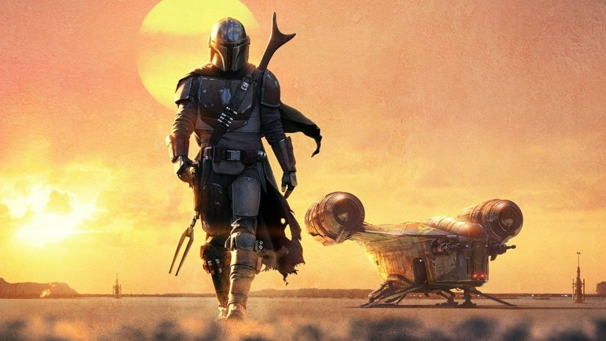
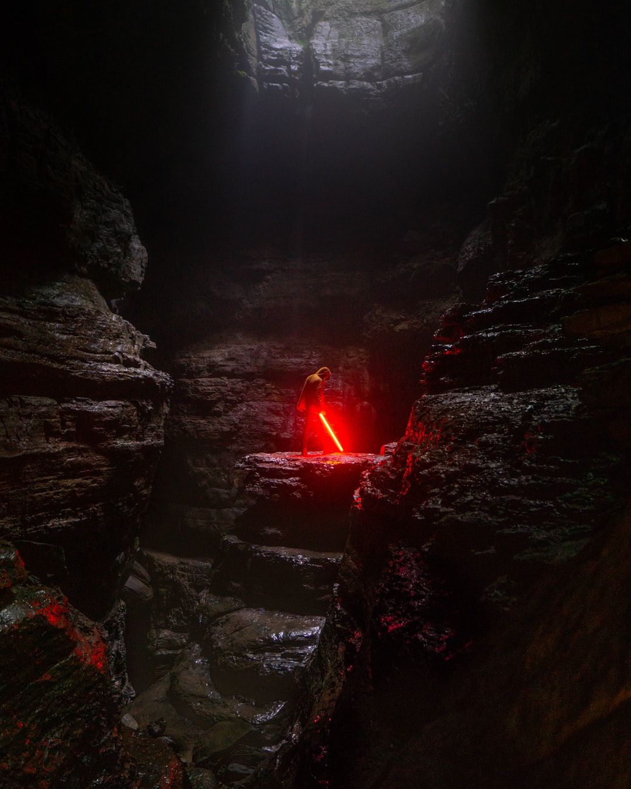

Star Wars (conocida también en español como La guerra de las galaxias) es una franquicia compuesta primordialmente de una serie de películas concebidas por el cineasta estadounidense George Lucas en la década de 1970, y producidas y distribuidas por The Walt Disney Company a partir de 2012. Su trama describe las vivencias de un grupo de personajes que habitan en una galaxia ficticia e interactúan con elementos como «la Fuerza», un campo de energía metafísico y omnipresente que posee un «lado oscuro» provocado por la ira, el miedo y el odio.